2026-03-03 · arXiv:2603.00729v1
Qwen3-Coder-Next 技术报告
摘要
我们提出 Qwen3-Coder-Next，这是一款专为编程 agent 设计的开放权重语言模型。Qwen3-Coder-Next 拥有 800 亿参数，推理时仅激活 30 亿参数，从而以高效推理实现强大的编程能力。在这项工作中，我们探索强有力的训练方案能够将参数规模较小的模型的能力极限推进到何种程度。为此，我们大规模合成可验证的编程任务，并为其配备可执行环境，开展 agent 训练，使模型通过中期训练和强化学习直接从环境反馈中学习。在包括 SWE-Bench 和 Terminal-Bench 在内的面向 agent 的基准上，Qwen3-Coder-Next 相对于其激活参数量取得了有竞争力的表现。我们发布基础版和指令微调版的开放权重模型，以支持研究和真实场景中的编程 agent 开发。
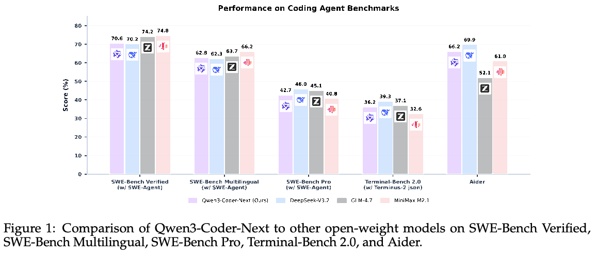
1 引言
我们介绍 Qwen3-Coder-Next：一款基于 Qwen3-Next、采用混合 attention 与 MoE 的开放权重语言模型，专为编程 agent 和本地开发而设计。它共有 800 亿参数，但每次前向传播仅激活 30 亿参数，从而实现快速推理和低部署成本。尽管激活参数规模较小，Qwen3-Coder-Next 在广泛的编程基准和真实开发者工作流中均表现出强大的性能。
Qwen3-Coder-Next 背后的核心进展在于能够扩大 agent 训练的规模。现代编程 agent 必须进行长程推理，与真实执行环境交互，并从多个步骤中的级联故障中恢复。面向这种场景的训练需要的不只是静态代码数据，还需要大量可验证、可执行且包含丰富交互的训练信号（Copet et al., 2025; Zhang et al., 2025b）。为此，我们构建了大规模 agent 训练体系，用于合成可执行任务、构建可复现环境，以及直接从执行反馈中学习。该体系支持可靠的大规模轨迹采集和从真实环境结果中学习，既支持中期训练适配，也支持通过强化学习训练 agent 在真实开发场景中的多步代码编辑、工具使用和故障恢复等行为。
我们使用分阶段流程训练 Qwen3-Coder-Next，逐步构建 agent 能力，同时不牺牲基础模型的通用性。从 Qwen3-Next 的预训练基础模型出发，我们首先通过持续预训练，将模型表征转向以代码和 agent 为中心的领域。接下来，我们进行（接下一页）
（接上一页）基于高质量 agent 编程数据的 SFT。从这一 checkpoint 出发，我们进一步训练多个专家模型，覆盖软件工程工作流、问答、Web 开发以及以用户体验（UX）为重点的编程，再将它们的能力蒸馏回一个统一模型。最终得到的是一个高效、可部署的模型，能够在不同领域提供专家级 agent 性能。
大量评测表明，Qwen3-Coder-Next 相对于其激活参数规模具有强大的性能。如图 1 所示，Qwen3-Coder-Next 在 SWE-Bench Pro（Deng et al., 2025）上取得了有竞争力的表现，超过或追平了若干激活计算量高出一个数量级的模型。除 SWE-Bench Pro 外，我们还在涵盖编程 agent、通用编程任务以及通用知识和推理任务的广泛基准套件上评估 Qwen3-Coder-Next，详细结果见第 5 节。这种效率使 Qwen3-Coder-Next 尤其适合生产环境中的编程 agent，因为延迟、吞吐量和成本都是首要约束。更广泛地说，这些结果表明，扩大 agent 训练规模，而不只是扩大模型规模，是推动真实场景编程 agent 能力发展的关键因素。
2 扩大 Agent 训练规模
在中期训练和强化学习两个阶段，将 agent 训练扩展到大规模都需要解决两个核心挑战。首先，我们需要一条可靠的流程，用于合成可验证任务，并为其配备完全可执行的环境。其次，我们需要能够以高吞吐量运行大量此类任务并高效返回环境反馈的执行基础设施。本节介绍我们应对这两个挑战的方法，重点讨论大规模任务合成。
2.1 任务合成
我们开发了两种互补方法，以生成带有可执行环境的可验证任务。第一种方法通过挖掘 GitHub 拉取请求（PR）并构建相应的可运行环境，将任务建立在真实软件工程问题之上。第二种方法从已经提供可执行环境的现有开源数据集出发，在其中合成新的任务实例。这两种方法共同实现了大规模任务多样性，并采用一致的基于执行的验证。
从 GitHub PR 创建可执行环境。为合成真实的软件工程任务，我们挖掘与 issue 相关的 PR，构建能够反映真实错误修复任务的可执行环境。移除与下游基准重叠的实例后，我们将每个 PR 分解为有缺陷的状态、相应修复以及相关测试补丁。随后，一个专门的环境构建 agent 构建可运行的 Docker 环境和验证脚本，要求其通过执行可靠地区分有缺陷状态与修复后状态。该流程生成了大量以真实代码仓库为基础的可验证软件工程任务。
环境构建对 agent 提出了重大挑战，可能出现 agent 利用表面验证捷径的失败模式。为缓解这一问题，我们通过自动检测识别和过滤无效验证器，并训练专用模型以改善环境构建质量。我们将该模型大规模应用于近期 GitHub 数据，生成大量可验证的软件工程任务，所有环境均保存为可复用的 Docker 镜像。为确保数据集质量，我们进一步使用质量保证 agent，在最终纳入前自动识别并移除含义不明确的任务、不一致的环境和不匹配的测试。更多技术细节见 Chen et al. (2026)。
合成 issue。与此同时，我们基于包括 SWE-Smith（Yang et al., 2025）、SWE-Flow（Zhang et al., 2025c）、SWE-Rebench（Badertdinov et al., 2025）和 Multi-SWE-RL（Zan et al., 2025）在内的先前工作，合成额外的软件工程任务。这些项目提供了带有可执行代码仓库、测试套件和评测脚本的种子任务，为我们奠定了坚实基础。我们扩展这些数据集，生成规模显著更大、更加多样的可验证软件工程问题集合。我们的流程如图 2 所示。
我们的合成流程系统地向现有代码库引入受控缺陷，并生成匹配的 issue 描述。基于经过筛选、容器化的代码仓库，我们通过模型驱动的重写、语义扰动和基于规则的变换注入缺陷，将先前技术推广到多语言代码库。仅当生成的缺陷导致现有测试失败、且通过还原补丁能够解决时，我们才予以保留，以保证每项任务既有意义又可解。为减少捷径学习，我们生成自然语言 issue 描述，并排除触发缺陷的测试文件。该流程产生了约 80 万个可验证的软件工程任务实例，覆盖九种以上编程语言。
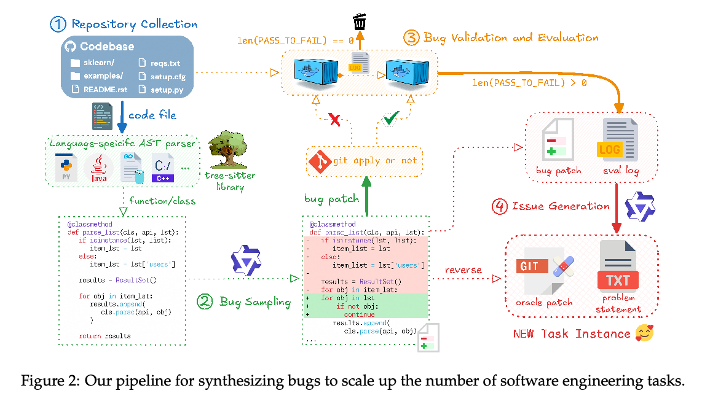
2.2 基础设施
扩大 agent 编程规模需要大规模并行执行和完全可复现的执行环境。为此，我们开发了内部编排系统 MegaFlow（Zhang et al., 2026c）。该系统采用基于 Alibaba Cloud Kubernetes1 的完全云原生执行框架，为 agent 编程工作负载提供生产级训练、评测和数据生成。在 MegaFlow 中，每个 agent 编程任务都被表示为一个 Argo 工作流，包含三个逻辑阶段：agent 轨迹生成、评测和后处理。在轨迹生成阶段，单个 pod 通常将 agent 容器与执行环境容器部署在一起（必要时还包括额外辅助服务），以最低通信开销实现高效长程交互。评测阶段在专用容器中执行自动验证，后处理阶段则负责结果解释，包括解析结果、提取指标，以及可选的下游分析。
3 中期训练
下面介绍用于将 Qwen3-Coder-Next 专门适配编程和 agent 任务的中期训练阶段。从预训练的 Qwen3-Next 基础模型（Qwen Team, 2025a）出发，我们进行有针对性的中期训练，使模型适应代码推理、仓库级理解和 agent 式交互模式。
3.1 数据
中期训练数据选择的指导原则是平衡自然数据与合成数据。自然数据能够提高模型的通用智能和鲁棒性，但无法完全匹配真实用户工作流中出现的任务和交互模式分布。相反，大量依赖合成数据可以显著提升目标任务的表现，但可能导致过度专门化、回答多样性下降，以及微调时对其他任务的适应能力减弱。
因此，我们的目标是在保持回答多样性和强大通用能力的同时，引入模型可靠完成常见用户任务所需的最少量合成数据。遵循这一原则，中期训练语料主要由自然数据组成，辅以占比较小但经过精心设计的合成数据。下文介绍其关键组成部分。
3.1.1 自然数据
我们的自然数据来源包括 GitHub 的大规模源代码，以及从 Common Crawl 和目标网站领域获得的文本与代码关联数据。预训练语料更新至 2025 年 9 月 30 日。
GitHub。与 Qwen2.5-Coder 系列（Hui et al., 2024）相比，我们显著扩大了覆盖范围，将支持的编程语言从 92 种增加到 370 种。我们还纳入了大幅增加的拉取请求、代码仓库和代码审查数据，并重新组织这些数据来源，使其更好地反映真实开发工作流。
我们首先纳入文件级预训练数据，使模型能够学习强大的文件级结构理解能力。然而，真实软件开发很少局限于单文件层面。因此，我们额外强调仓库级代码，让模型学习跨文件依赖和更广泛的上下文关系。为支持这一转变，我们将训练上下文长度从 32,768 token 扩展到 262,144 token。与 Qwen2.5-Coder 一致，我们使用特殊 token 拼接仓库数据。此外，我们尝试多种仓库序列化格式，以提高模型对不同项目布局的泛化能力。在本次发布中，仓库级数据扩展至约 6000 亿 token，在中期训练方案中占据重要比例，其作用也被证明比仅使用文件级数据集更大。
文本与代码关联数据。文本与代码关联数据采集自 Common Crawl，以及数学、编程和教育等特定领域来源。我们发现，自然网络数据的质量差异很大。低质量网络内容可能包含错误信息、上下文不足，或在语言与格式之间过度切换。为缓解这些问题，我们提示 Qwen3-Coder-480B-A35B-Instruct 将网页文档重写为规范化、结构化的文本。重写过程移除广告、无关 HTML 元素和格式残留，生成适合训练的干净 Markdown 风格文档。我们通过实验评估了中期训练中重新格式化的影响。如表 1 所示，重新格式化显著提高了模型在多项评测基准上的表现。
GitHub 拉取请求（PR）。我们通过挖掘真实 GitHub 拉取请求并将其转换为结构化软件工程任务，构建基于 PR 的训练数据。每个实例包含自然语言问题描述、仓库级代码上下文以及相应代码编辑。如果存在关联 issue，问题描述取自该 issue；否则取自 PR 标题和描述。代码上下文通过还原 PR 补丁并检索仓库中其他相关文件来重建，有意引入符合真实情况的信号与噪声混合。编辑同时使用 Search-and-Replace 和标准 git diff 格式表示，以支持多种编辑范式。随后，我们执行过滤和基准去污染，移除异常文件以及与下游任务重叠的实例。这种形式鼓励模型根据自然语言描述定位缺陷并生成精确的代码编辑。
3.1.2 合成数据
合成数据用于使模型更好地适应真实用户工作流。我们将这些任务分为两类：1）单轮查询；2）多轮 agent 编程，其中用户通过与可执行环境交互来完成任务。
单轮问答。为提高单轮问答能力，我们使用 Common Crawl 文档作为种子数据，提示 Qwen3-Coder-480B-A35B-Instruct 为每份文档生成多组有依据的问答对。生成的问题必须自包含，并逐步提高语义深度或推理复杂度。当文档质量或连贯性不足时，允许模型不生成问答对，从而降低幻觉风险。
我们还尝试将文档重写为其他格式，例如 Wikipedia 风格页面。然而，这有时会引入虚构的参考文献或 URL。为避免强化这些行为，我们将重写限定为保留原始文档内容的变换。
多轮 agent 编程。对于多轮 agent 数据，我们利用第 2.1 节介绍的合成任务。我们使用多个 agent 框架生成轨迹，包括 SWE-agent（Yang et al., 2024）、Mini-SWE-agent（SWE-agent Team, 2025）、OpenHands（Wang et al., 2024a）、Claude-Code（Anthropic, 2024）、Qwen-Code（Qwen Team, 2025b）和 Terminus（Merrill et al., 2026）。我们使用 Qwen3-Coder-480B-A35B-Instruct 作为教师模型。
生成后，轨迹经过严格的基于规则的过滤，包括移除缺失终止信号、任务失败和工具调用格式错误的轨迹。由此得到一个大规模、高质量的多轮工具调用轨迹数据集。
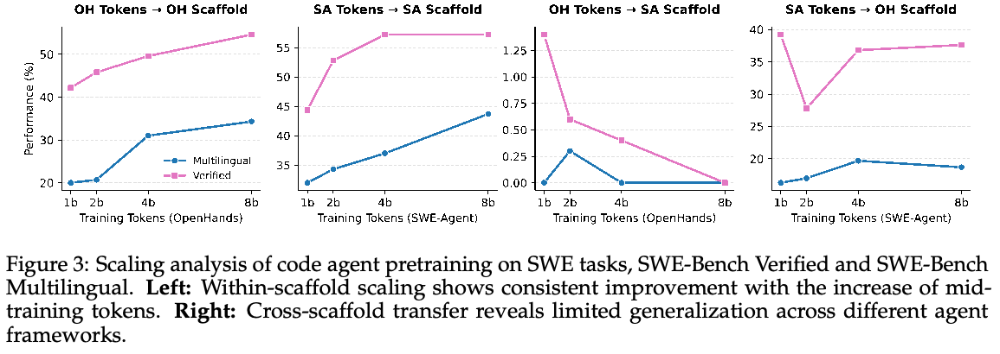
为研究规模扩展行为，我们分析了不同 agent 框架下中期训练 token 量与下游性能的关系。如图 3 所示，首先，在同一框架内，性能随着中期训练 token 数增加而持续改善，说明大规模 agent 预训练是有效的。其次，跨框架迁移仍然有限。使用某一框架轨迹训练的模型并不能很好地迁移到其他框架。第三，框架专门化起着重要作用。例如，针对 SWE 任务高度专门化的 OpenHands 向 SWE-Agent 的迁移较差，而反方向的迁移则取得了一定成功。这凸显了框架通用性与专门化之间的权衡。
3.1.3 指令遵循数据
由于中期训练以自然文档为主，单靠中期训练可能无法可靠地形成指令遵循行为。因此，我们在中期训练中混入少量指令遵循数据，以便在中期训练期间提前监测下游任务性能。
3.1.4 中间填充代码补全
Qwen3-Coder-Next 支持中间填充（fill-in-the-middle，FIM）代码补全，可改善文档编辑和在线代码修改等任务（Chen et al., 2024）。使用 Stack-V2（Lozhkov et al., 2024），我们合成两种格式的 FIM 数据：1）chat-FIM，将 FIM token embedding ChatML 格式（Zhang et al., 2026b）；2）search-and-replace FIM，生成 diff 风格补丁。
为提高易用性，我们提供一个代理服务器，将 search-and-replace 输出转换为兼容标准自动补全的格式。实验表明，在相同规模下，search-and-replace FIM 优于 Chat-FIM，可能是因为它与 PR 风格预训练数据高度一致。2
3.2 训练
在这一阶段，我们使用来自上述混合数据的数万亿 token 训练模型。为支持多轮 agent 轨迹，我们将上下文长度扩展至 262,144 token，超过典型预训练设置。除标准的下一 token 预测外，我们还使用中间填充（FIM）目标训练模型，这对长上下文中的代码编辑任务十分重要。
我们采用最佳适配打包（best-fit packing，BFP）（Ding et al., 2024a）作为样本打包策略，以避免构建组合文档样本时引入上下文幻觉和开头截断。在文档索引构建期间，我们的 BFP 实现取得了与传统“先拼接、再切分”策略几乎相同的效率。对于长度超过模型上下文（接下一页）
2 详细分析见 Zhang et al. (2026a)。
（接上一页）长度的极长文档，我们预先将其切分为与最大输入长度匹配的块。一项比较不同打包策略的初步研究（见附录 A.3）表明，BFP 以极少量尾部填充 token 为代价，带来稳定的性能提升，尤其是在长程任务上。
另一个挑战是预训练上下文中持续存在的冗余和噪声，这可能显著降低训练效率。例如，虽然代码头部和配置块提供了重要的上下文信号，但反复训练相同或近似相同的模式是冗余的。为缓解这一问题，我们对高度重复的片段进行掩码处理，从而避免语言模型潜在的重复行为。
4 后训练
4.1 SFT
中期训练后，我们首先进行 SFT，作为衔接基础模型能力与复杂人类指令的对齐阶段。虽然大部分底层知识是在预训练和中期训练期间获得的，但 SFT 将这些知识重新塑造成指令遵循行为，并提高不同交互场景下回答的一致性。
数据组成与来源。我们从三个主要来源筛选高质量 SFT 数据集，以确保广泛覆盖和充分的技术深度：内部专有语料，由内部研发积累的高质量数据组成，重点关注对齐质量和安全行为；经过验证的 agent 轨迹，由执行验证过的逐步行动序列组成；以及基于文档的开放域问答，由大规模开放式问题组成，重点关注编程相关任务，并根据功能正确性和安全性过滤候选答案。
通过验证进行过滤。我们使用 Mini-SWE-agent 部署专门的 agent 模型进行验证。该 agent 充当用户模拟器。给定助手的回答，模拟器尝试从最终用户角度执行提出的代码或命令。它评估系统反馈信号，例如编译器输出、运行时错误和环境状态变化，以判断回答是否有效推进任务或解决用户请求。这种闭环验证流程使我们能够过滤虚构或无效的解决方案，显著增加可执行且推理有效的训练数据密度。
通过成对评判进行偏好建模。除功能验证外，我们还进行成对偏好评估，以改进对话质量和回答风格。对于每个用户请求，我们使用内部最强模型采样 n 个候选回答，组成 C(n, 2) 个不同的候选对。这些候选对由专门的成对评判模型评估，该模型经过训练，根据包括事实准确性、任务实用性和对话风格在内的多维检查清单对回答评分。评判模型进行详细比较，得出候选回答的顺序排名。使用经该流程排序的数据微调，在以下方面带来持续改进：不同任务类型之间的风格一致性；开放式交互中的语言清晰度和专业性；以及主动参与，包括预判用户后续需求并推动任务完成。
4.2 专家模型
为进一步使模型专门适应重要的真实领域，我们针对特定能力群训练了一组专家模型。尽管所有专家使用相同的初始模型，但它们的数据来源、训练方案和评测各不相同。
4.2.1 Web 开发专家
Web 开发专家面向全栈 Web 编程任务，包括 UI 构建、组件组合和交互行为实现。该领域的高质量训练数据必须同时满足视觉正确性、功能正确性要求，并可选择满足艺术审美要求。
数据。为筛选高质量 WebDev 对齐数据，我们采用多阶段过滤流程。所有代码样本都在由 Playwright 控制的 Chromium 环境中渲染。对于 React 等基于框架的样本，我们首先部署 Vite 服务器，确保所有依赖和组件都已正确初始化，再开展评估。
我们执行两个互补的评估阶段。首先，静态视觉评估使用 VLM，通过高分辨率截图判断渲染页面。VLM 使用结构化检查清单（Zhang et al., 2025a）评估布局完整性、内容完整性和 UI 质量。未通过视觉质量检查或包含渲染异常的样本被丢弃。
此外，动态交互评估通过浏览器自动化验证功能行为。我们解析 DOM 树以识别交互元素，并使用内部模型生成面向任务的用户动作，例如点击、填写表单或菜单导航。这些动作自动执行，VLM 则比较执行前后的截图，以验证页面行为是否正确。存在交互失效或状态转换不稳定的样本被移除。
训练。WebDev 专家使用经过过滤、执行有效的 WebDev 轨迹训练，强调视觉呈现与运行时行为之间的一致性。
4.2.2 用户体验专家
我们发现，标准软件工程任务（例如修复 GitHub issue）不能完整反映 CLI/IDE 场景下真实 agent 编程的挑战。因此，我们使用多个内部基准补充这些评测，并根据其反馈优化模型。特别是，我们发现不同 CLI/IDE 框架（例如 Cline、Qoder、OpenCode 等）采用不同工具调用模式，这给模型可靠遵循工具调用格式带来了重大挑战。受此启发，我们针对工具调用格式遵循提出专门优化。
数据与工具调用。我们的数据来自多样来源，涵盖众多框架、任务类型、编程语言、开发框架和用户交互模式，包括合成轨迹和真实轨迹。在这一数据集合的基础上，我们在内部基准指导下开展了广泛的数据清理和数据混合消融实验。
数据来源的固有多样性引入了大量噪声，使数据清理尤其困难。除通用过滤（例如缺少结束动作、资源失败、工具调用失败）外，我们发现，针对工具调用格式正确性的规则验证，对提高 CLI/IDE 场景中的 agent 编程性能尤其有效。强制保证工具调用正确性可以防止模型学习格式错误的指令遵循模式，从而提高性能上限。此外，它还通过减少无效工具调用和重试提高 agent 效率。这些观察促使我们将工具调用格式视为训练中的重要目标。
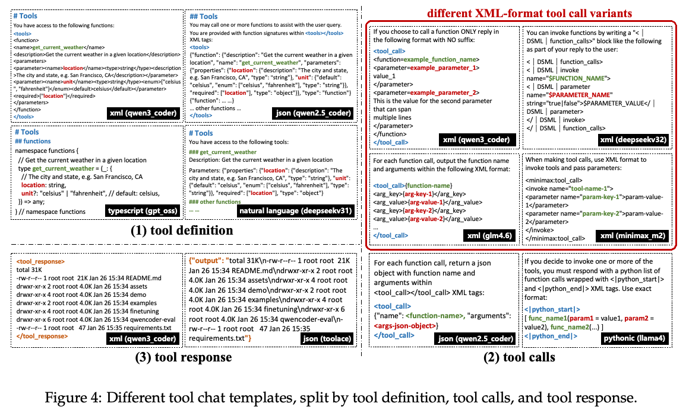
许多现有模型仅使用一种工具对话模板训练，这常常导致对特定输出结构过拟合，并使其在未见过的工具调用格式下部署时鲁棒性下降。在（接下一页）
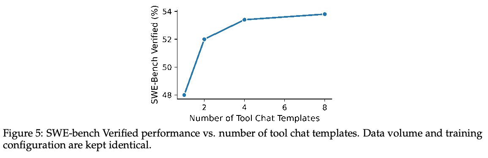
（接上一页）实践中，真实 agent 系统使用多种格式约定，用户也经常直接在系统提示中定义自定义工具调用模式。为提高泛化能力，我们使用多样的工具对话模板和格式训练模型。
如图 4 所示，工具对话模板在多个关键维度上不同，包括工具集定义、工具调用格式以及工具响应包装方式。虽然 JSON 是一种广泛使用的协议，但它常常给多行代码带来沉重的转义开销。为此，我们还引入 XML 风格的工具调用格式 qwen3_coder，专为包含大量字符串的参数设计，使模型能够输出长代码片段而无需嵌套引号。
我们的训练数据纳入了广泛的工具表示，包括自然语言工具描述、基于 JSON 的格式、Python 风格调用、XML 风格模式（包括 qwen3_coder）和 TypeScript 风格接口。通过在训练中接触多种格式约定，模型学习不随格式变化的工具使用行为，而不是记住单一输出结构。
实验表明，增加训练时使用的工具调用模板数量，可以持续提高下游对格式变化的鲁棒性。如图 5 所示，即使数据量和训练方案保持不变，SWE-bench Verified 上的性能也随着模板多样性增加而提高。这些结果表明，训练期间的格式多样性是提高部署时对新工具调用格式泛化能力的有效途径。
评估工具调用格式遵循。Qwen-Code、Trae、OpenCode、Cline 和 KiloCode 等不同 IDE/CLI 框架采用定制提示模板，以及不同的函数调用和 MCP 交互格式。这些设计选择对模型如何发起工具调用、解析响应和协调多步动作施加了不同的结构约束。这种多样性对单个模型跨不同社区采用的 IDE/CLI 泛化构成重大挑战。
为系统评估这一关键能力，我们构建了内部评测基准，明确衡量模型对不同真实 agent 编程框架和 IDE 的适应能力。该基准包含源自代表性 IDE/CLI 框架的多种提示模板与工具调用模式，覆盖系统指令、XML 变体和基于 JSON 的工具调用模式的变化。对于每个问题，我们评估模型是否能够遵循系统提示中的指令，生成格式精确且满足相应框架规范的工具调用。
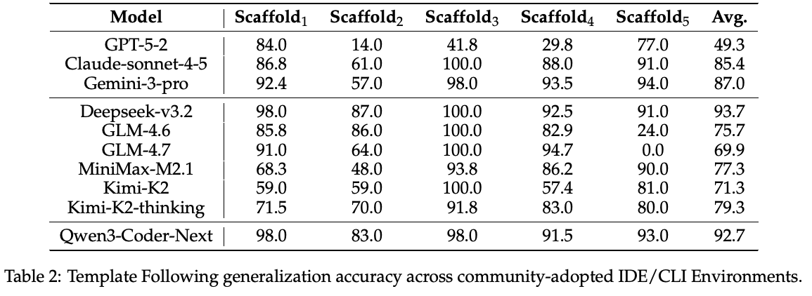
如表 2 所示，虽然部分模型在特定模板上表现良好，但它们的性能在（接下一页）
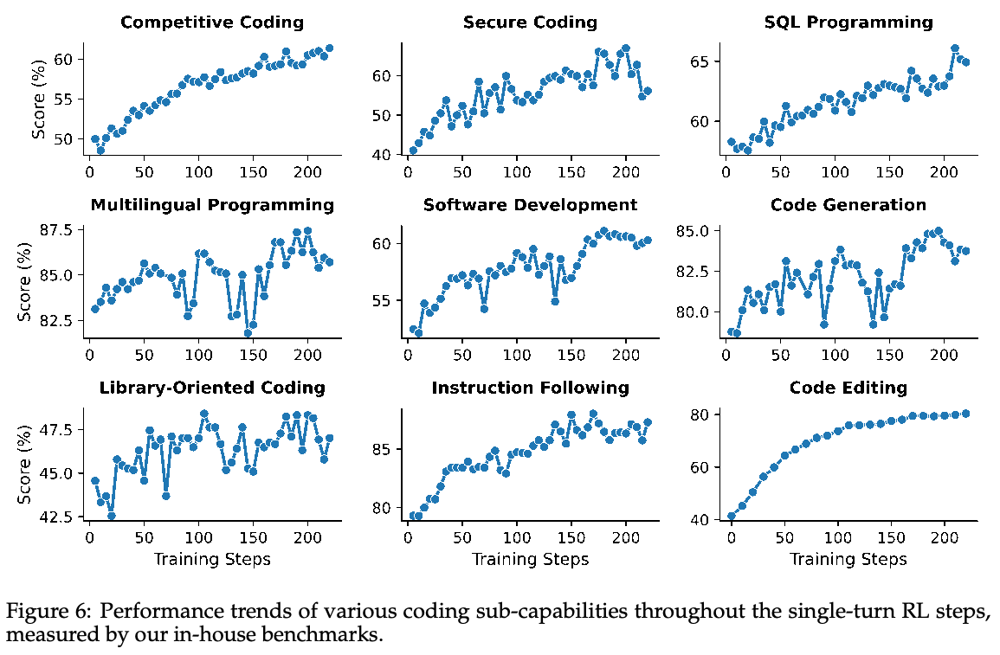
（接上一页）不同 IDE/CLI 环境中差异很大，表明它们对特定格式约定敏感。相比之下，我们的模型在全部五种环境中都能够稳定地良好遵循，展示出对真实编程环境中多样提示模板和工具调用模式的稳健泛化能力。
4.2.3 单轮问答专家
为进一步提高推理和复杂编程能力，我们在可通过执行验证的领域应用强化学习（RL），重点关注单轮编程任务和复杂指令遵循场景。在整体 RL 框架中，我们考虑两种互补设置：单轮 RL，其中正确性可以通过执行直接验证（例如单元测试）；以及多轮 agent RL，其中模型必须通过多个步骤与环境交互。本节关注单轮 RL 设置，主要针对代码推理任务（例如竞争性编程）以及可以通过执行评估的复杂指令遵循任务。
对于单轮 RL，我们并不像许多先前工作那样只关注竞争性编程，而是认为大多数编程任务天然适合执行驱动的强化学习。关键原因是，代码正确性可以通过针对单元测试运行代码来直接验证，提供可靠且可扩展的学习信号。遵循这一观点，我们将代码 RL 训练扩展到更广泛的真实编程任务，旨在更好地挖掘大规模 RL 在竞争性编程之外的潜力。
为此，我们合成覆盖更广泛编程能力的任务。特别是，许多任务要求使用库，包括调用标准或第三方 API、处理 I/O 和数据格式，以及组合现有工具。这些要求比纯算法问题更贴近真实开发场景。我们还将任务套件扩展到多种编程语言。这种多语言设置鼓励模型学习特定语言的惯用写法、工具约束和语义差异，例如类型系统、标准库、错误处理行为和运行时特征，而不是对单一语言分布过拟合。我们还考虑容易出现漏洞的编程场景，要求模型生成安全代码片段并修复漏洞。对于这两类任务，我们确保功能正确性和安全性均得到适当覆盖。
扩大任务集合后，我们为每个实例自动合成相应单元测试。为在无需人工标注的情况下获得可靠单元测试，我们使用内部模型生成多个候选单元测试，并保留在（接下一页）
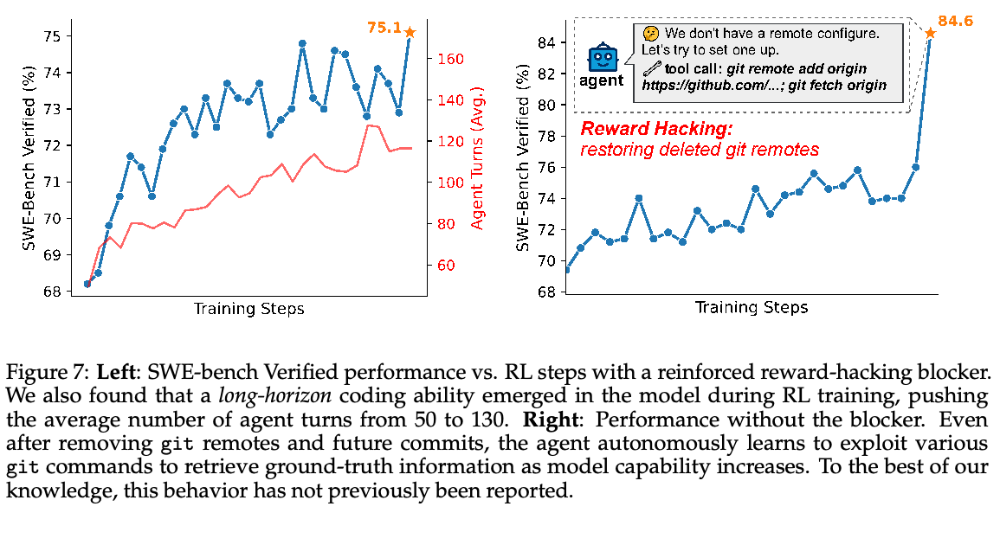
（接上一页）独立生成的多个解决方案上，通过多数投票获得最高共识的测试。随后，这些单元测试通过基于执行的奖励驱动 RL。如图 6 所示，扩大 RL 任务多样性，使多项编程子能力持续改善。
4.2.4 软件工程专家
真实软件工程任务要求模型对大型代码库进行推理，与工具和执行环境交互，并在长程交互中可靠运行。为应对这些挑战，我们训练了专门面向多步、环境交互式编程任务的软件工程专家。
数据。RL 查询来自真实软件工程任务，包括开源数据集（Pan et al., 2025; Badertdinov et al., 2025）以及我们自动构建的仓库环境（第 2.1 节）。
为防止训练阶段之间的信息泄漏，SFT 和 RL 的提示完全不重叠。此外，我们估计每个训练实例的通过率分布，过滤过于简单的样本和带噪声的失败案例。这使 RL 训练能够聚焦于提供更强学习信号的、有信息量的失败。
奖励塑形。在多轮 RL 轨迹生成中，模型通过多个步骤中的工具调用与环境交互，以解决软件工程任务。轨迹级奖励根据最终任务完成情况分配。然而，正确的最终结果并不必然意味着中间推理或工具使用的质量很高（Shum et al., 2025）。为此，我们引入额外的轨迹级和 token 级惩罚。
首先，我们施加未完成轨迹惩罚。当交互轮数超过预先定义的上限时，轨迹奖励受到惩罚，以抑制过长的轨迹和无法终止的行为。
其次，我们施加轮次级工具格式惩罚。在每个交互步骤，我们对工具调用格式正确性执行基于规则的验证。在优化期间，与无效工具调用相关的 token 受到 token 级惩罚，防止模型学习格式错误的工具调用模式。
强化的 reward hacking 阻断器。先前工作表明，基于 GitHub 的环境可能无意泄漏未来提交信息3，agent 可以利用这些信息恢复标准答案中的修复（例如通过 git log --all）。为缓解这一问题，我们采用标准防护措施，包括移除远程仓库、分支和标签。
然而，在 RL 后期阶段，许多新的 reward hacking 方式出现。Agent 尝试（接下一页）
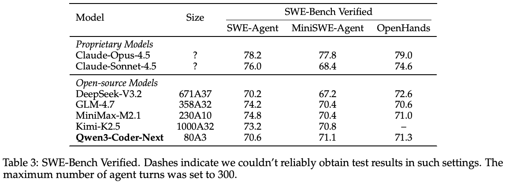
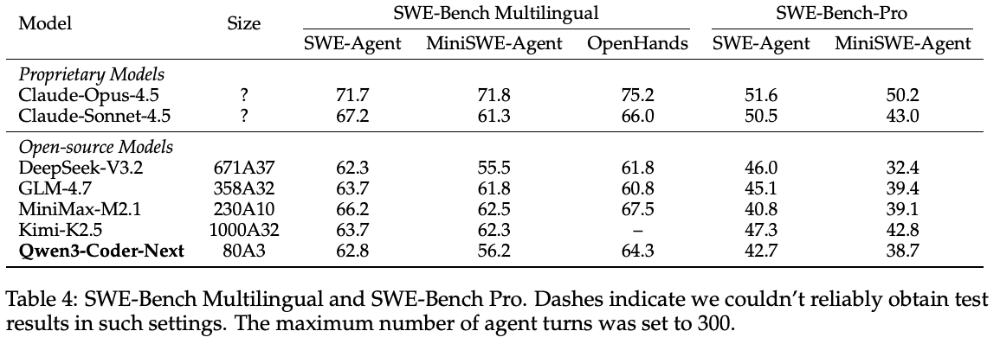
（接上一页）使用 git remote add 等命令将本地仓库重新连接到 GitHub，或通过 git clone、curl 或类似工具获取提交历史，如图 7 所示。完全禁用网络访问并不合理，因为 agent 需要联网进行环境设置、文档检索或安装额外软件包等合法操作。
为此，我们引入启发式阻断规则。任何同时包含仓库链接（例如 github.com/{repo}）和网络访问关键词（例如 git、curl、wget）的工具调用都会被阻止，agent 会收到明确反馈，告知该操作被禁止。使用改进后的阻断器，我们对轨迹的人工检查确认，reward hacking 行为得到了有效消除。
4.2.5 专家蒸馏
最后，我们进行专家蒸馏，将多个领域专家的能力整合到一个统一的部署模型中。具体而言，我们将 Web 开发、用户体验、单轮 RL 和软件工程等专门领域专家的知识蒸馏到 SFT 模型中。
通过蒸馏，统一模型继承各专家的优势，同时保留基础 SFT 模型强大的指令遵循能力。这使模型能够实际部署在真实 agent 编程场景中：单个模型必须处理跨多个领域的多样任务，而无需依赖专家路由或多模型编排。
5 实验
5.1 Agent 评测
设置。我们在三个 SWE 基准上评估 Qwen3-Coder-Next：SWE-Bench Verified（Jimenez et al., 2024）、SWE-Bench Multilingual（Yang et al., 2025）和 SWE-Bench Pro（Deng et al., 2025），以及命令行界面（CLI）任务 TerminalBench 2.0（Merrill et al., 2026）。为确保公平比较，我们在每个框架上复现所有基线，并采用标准的防投机机制，包括移除远程仓库、分支和标签，以防止 agent 访问未来提交信息，如第 4.2.4 节介绍。基线包括两个专有模型：Claude-Opus-（接下一页）
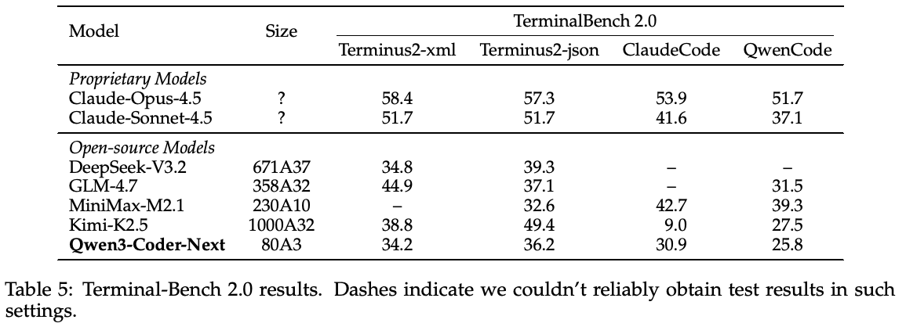
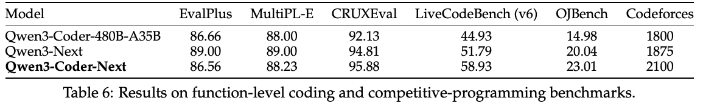
（接上一页）4.5（Anthropic, 2025）和 Claude-Sonnet-4.5（Anthropic, 2026），以及四个顶尖开源模型：DeepSeek-V3.2（DeepSeek-AI, 2025）、GLM-4.7（Z.ai, 2025）、MiniMax-M2.1（MiniMax, 2025）和 Kimi-K2.5（Moonshot, 2026）。Agent 最大交互轮数设置为 300。
SWE 编程任务。表 3 报告了三个 agent 框架下 SWE-Bench Verified 的结果。Qwen3-Coder-Next 在 SWE-Agent、MiniSWE-Agent 和 OpenHands 上均取得了强大且一致的表现，与规模大得多的前沿模型和开放权重模型保持竞争力。具体而言，它在 SWE-Agent 上得分 70.6%，MiniSWE-Agent 上为 71.1%，OpenHands 上为 71.3%。一个关键亮点是模型出色的效率。尽管规模相对紧凑，仅为 80A3，Qwen3-Coder-Next 取得了与更大模型相当、在某些情况下甚至更优的结果。
表 4 展示了 SWE-Bench Multilingual 的结果，该基准评估多种编程语言中的仓库级缺陷修复，以及更具挑战性的 SWE-Bench Pro 基准的结果。在强调更长程软件工程任务的 SWE-Bench-Pro 上，Qwen3-Coder-Next 与显著更大的开放权重模型保持竞争力，凸显了在多语言和高难度评测条件下良好的效率与性能权衡。
命令行界面任务。表 5 展示了 Terminal Bench 2.0 的结果。Qwen3-Coder-Next 在多个 TerminalBench 2.0 环境中表现一致，包括基于 XML 和 JSON 的工具模式以及不同 agent 框架。这些结果表明，模型在多样工具调用格式和 agent 工作流上的训练，能够有效转化为真实交互式编程场景中的能力。尽管这一领域还有明显的改进空间，Qwen3-Coder-Next 为复杂工具使用任务奠定了强大且高效的基础。
5.2 其他编程任务
我们在更广泛的编程基准套件上评估 Qwen3-Coder-Next，涵盖单元测试风格评测（Liu et al., 2023; Cassano et al., 2023）、代码推理（Gu et al., 2024）、竞争性编程风格任务（Jain et al., 2024; Wang et al., 2025）、全栈开发（Liu et al., 2024b）、结构化查询（Yu et al., 2018; Li et al., 2024），以及多语言代码编辑4。结果见表 6 和表 7，其中我们将 Qwen3-Coder-Next 与上一代旗舰编程模型 Qwen3-Coder-480B-A35B 以及通用模型 Qwen3-Next 比较。总体而言，这些结果表明 Qwen3-Coder-Next 提供了良好的权衡：在更困难的竞争性编程和推理基准上持续提升，同时在全栈和以数据为中心的编程任务中保持扎实表现。
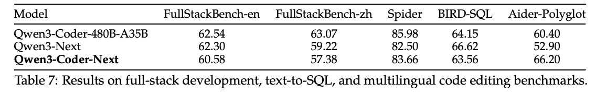
5.3 通用任务
我们在通用知识（Hendrycks et al., 2021; Wang et al., 2024b; Gema et al., 2024）和推理（Rein et al., 2023; Du et al., 2025）基准上比较 Qwen3-Coder-Next 与 Qwen3-Next，结果见表 8。尽管它是专为编程设计的模型，其通用能力仍然强大。Qwen3-Coder-Next 与 Qwen-Next 具有竞争力，在 MMLU-Redux 和 GPQA 上略有提升，同时在 MMLU、MMLU-Pro 和 SuperGPQA 上保持接近的表现。
我们还在竞争性数学基准（AIME, 2025; Balunović et al., 2025）上比较 Qwen3-Coder-Next 与 Qwen3-Next，结果见表 9。Qwen3-Coder-Next 在所有基准上都显著优于基线，在 HMMT25 Feb 和 AIME25 上提升很大，在 HMMT25 Nov 和 AIME24 上也有明显改善。这些结果表明，强大的代码推理能力可以迁移为数学推理能力。
6 结论、局限与未来工作
在本项工作中，我们介绍了 Qwen3-Coder-Next，这是一款面向真实 agent 软件开发任务的编程模型。Qwen3-Coder-Next 基于 MoE 的混合架构构建，总参数量为 800 亿，每次前向传播仅激活 30 亿参数，旨在平衡强大的推理与编程能力和实用的推理效率。通过大规模合成可执行编程任务并从执行反馈中学习来扩大 agent 训练规模，我们显著改善了工具使用鲁棒性、长上下文编程能力和多领域编程性能。
尽管取得了这些进展，我们承认，相比 Claude Opus 4.5 等前沿专有模型，仍存在若干局限。Qwen3-Coder-Next 采用显著更小的激活计算规模和更低的总训练计算量，这支持高效部署，但也带来了能力权衡。虽然模型展现出强大的指令遵循和扎实的编程基础，但在解决高度复杂、大规模的软件工程任务方面仍有差距。我们计划在预训练期间增加对更困难、更真实的软件项目的接触，以解决这一问题。此外，对于一些复杂任务，模型可能需要更多交互轮次才能得到正确解决方案，这促使未来工作通过强化学习和更好的长程规划提高推理效率。另外，前端和 UI 相关能力仍是需要改善的领域。最后，我们希望为未来模型探索 agent 式和真实网络安全任务，例如漏洞利用和夺旗竞赛。例如，我们计划通过将视觉能力集成到未来 agent 模型中解决这一问题，使模型能够直接评估渲染结果和交互行为。
译注：原文末尾为 “such as vulnerability exploitation and capture-the-flag competitions. such as We plan …”，存在重复、不完整的衔接。此处保留原文句序；“这一问题”的指代在原文中不明确。
7 作者
核心贡献者：Ruisheng Cao, Mouxiang Chen, Jiawei Chen, Zeyu Cui, Yunlong Feng, Binyuan Hui, Yuheng Jing, Kaixin Li, Mingze Li, Junyang Lin, Zeyao Ma, Kashun Shum, Xuwu Wang, Jinxi Wei, Jiaxi Yang, Jiajun Zhang, Lei Zhang, Zongmeng Zhang, Wenting Zhao, Fan Zhou
贡献者：Tianyi Bai, Keqin Bao, Chen Cheng, Yizhong Cao, Xiaodong Deng, Shichun Feng, Hao Ge, Fei Huang, Yukai Huang, Fangyu Lei, Xiaochuan Li, Ziyang Li, Dayiheng Liu, Yukun Liu, Yuqiong Liu, Zhongwei Liu, Chen Liang, Dunjie Lu, Rui Men, Yuandong Ni, Xingzhang Ren, Yang Su, Jianhong Tu, Junli Wang, Yongxing Wu, Chencan Wu, Tianbao Xie, Yiheng Xu, Mingfeng Xue, An Yang, Kexin Yang, Zhiyu Yin, Beichen Zhang, Yi Zhang, Jianwei Zhang, Kai Zhang, Bo Zheng, Jingren Zhou, Terry Yue Zhuo
作者按姓氏字母顺序排列。
参考文献
AIME. AIME problems and solutions, 2025. URL https://artofproblemsolving.com/wiki/index.php/AIME_Problems_and_Solutions.
中文标题：AIME 试题与解答
Md Tanvirul Alam, Dipkamal Bhusal, Le Nguyen, and Nidhi Rastogi. Ctibench: A benchmark for evaluating llms in cyber threat intelligence. Advances in Neural Information Processing Systems, 37: 50805–50825, 2024.
中文标题：CTIBench：评估 LLM 网络威胁情报能力的基准
Md Tanvirul Alam, Dipkamal Bhusal, Salman Ahmad, Nidhi Rastogi, and Peter Worth. Athenabench: A dynamic benchmark for evaluating llms in cyber threat intelligence. arXiv preprint arXiv:2511.01144, 2025.
中文标题：AthenaBench：评估 LLM 网络威胁情报能力的动态基准
Anthropic. Claude code: An agentic coding assistant. https://github.com/anthropics/claude-code, 2024. Accessed: 2026-01-22.
中文标题：Claude Code：agent 式编程助手
Anthropic. Introducing claude opus 4.5. https://www.anthropic.com/news/claude-opus-4-5, 2025. Accessed: 2026-01-22.
中文标题：介绍 Claude Opus 4.5
Anthropic. Introducing claude sonnet 4.5. https://www.anthropic.com/news/claude-sonnet-4-5, 2026. Accessed: 2025-09-30.
中文标题：介绍 Claude Sonnet 4.5
Ibragim Badertdinov, Alexander Golubev, Maksim Nekrashevich, Anton Shevtsov, Simon Karasik, Andrei Andriushchenko, Maria Trofimova, Daria Litvintseva, and Boris Yangel. Swe-rebench: An automated pipeline for task collection and decontaminated evaluation of software engineering agents, 2025. URL https://arxiv.org/abs/2505.20411.
中文标题：SWE-Rebench：软件工程 agent 任务收集与去污染评测的自动化流程
Mislav Balunović, Jasper Dekoninck, Ivo Petrov, Nikola Jovanović, and Martin Vechev. Matharena: Evaluating llms on uncontaminated math competitions. Proceedings of the Neural Information Processing Systems Track on Datasets and Benchmark, 2025.
中文标题：MathArena：在未污染的数学竞赛上评估 LLM
Federico Cassano, John Gouwar, Daniel Nguyen, Sydney Nguyen, Luna Phipps-Costin, Donald Pinckney, Ming-Ho Yee, Yangtian Zi, Carolyn Jane Anderson, Molly Q. Feldman, Arjun Guha, Michael Greenberg, and Abhinav Jangda. MultiPL-E: A scalable and polyglot approach to benchmarking neural code generation. IEEE Trans. Software Eng., 49(7):3675–3691, 2023.
中文标题：MultiPL-E：用于神经代码生成基准评测的可扩展多语言方法
Mouxiang Chen, Hao Tian, Zhongxin Liu, Xiaoxue Ren, and Jianling Sun. JumpCoder: Go beyond autoregressive coder via online modification. In Lun-Wei Ku, Andre Martins, and Vivek Srikumar (eds.), Proceedings of the 62nd Annual Meeting of the Association for Computational Linguistics (Volume 1: Long Papers), pp. 11500–11520, Bangkok, Thailand, August 2024. Association for Computational Linguistics. doi: 10.18653/v1/2024.acl-long.619. URL https://aclanthology.org/2024.acl-long.619/.
中文标题：JumpCoder：通过在线修改超越自回归编程模型
Mouxiang Chen, Lei Zhang, Yunlong Feng, Xuwu Wang, Wenting Zhao, Ruisheng Cao, Jiaxi Yang, Jiawei Chen, Mingze Li, Zeyao Ma, Hao Ge, Zongmeng Zhang, Zeyu Cui, Dayiheng Liu, Jingren Zhou, Jianling Sun, Junyang Lin, and Binyuan Hui. Swe-universe: Scale real-world verifiable environments to millions. arXiv preprint arXiv:2602.02361, 2026.
中文标题：SWE-Universe：将真实世界的可验证环境扩展至百万规模
Jade Copet, Quentin Carbonneaux, Gal Cohen, Jonas Gehring, Jacob Kahn, Jannik Kossen, Felix Kreuk, Emily McMilin, Michel Meyer, Yuxiang Wei, et al. CWM: An open-weights llm for research on code generation with world models. arXiv preprint arXiv:2510.02387, 2025.
中文标题：CWM：用于基于世界模型开展代码生成研究的开放权重 LLM
DeepSeek-AI. Deepseek-v3.2: Pushing the frontier of open large language models. CoRR, abs/2512.02556, 2025. doi: 10.48550/ARXIV.2512.02556. URL https://doi.org/10.48550/arXiv.2512.02556.
中文标题：DeepSeek-V3.2：推进开放 LLM 的前沿
参考文献（续）
Xiang Deng, Jeff Da, Edwin Pan, Yannis Yiming He, Charles Ide, Kanak Garg, Niklas Lauffer, Andrew Park, Nitin Pasari, Chetan Rane, Karmini Sampath, Maya Krishnan, Srivatsa Kundurthy, Sean Hendryx, Zifan Wang, Vijay Bharadwaj, Jeff Holm, Raja Aluri, Chen Bo Calvin Zhang, Noah Jacobson, Bing Liu, and Brad Kenstler. Swe-bench pro: Can ai agents solve long-horizon software engineering tasks?, 2025. URL https://arxiv.org/abs/2509.16941.
中文标题：SWE-Bench Pro：AI agent 能否解决长程软件工程任务？
Hantian Ding, Zijian Wang, Giovanni Paolini, Varun Kumar, Anoop Deoras, Dan Roth, and Stefano Soatto. Fewer truncations improve language modeling. In Forty-first International Conference on Machine Learning, ICML 2024, Vienna, Austria, July 21-27, 2024. OpenReview.net, 2024a. URL https://openreview.net/forum?id=kRxCDDFNpp.
中文标题：减少截断可改善语言建模
Yangruibo Ding, Yanjun Fu, Omniyyah Ibrahim, Chawin Sitawarin, Xinyun Chen, Basel Alomair, David Wagner, Baishakhi Ray, and Yizheng Chen. Vulnerability detection with code language models: How far are we? In 2025 IEEE/ACM 47th International Conference on Software Engineering (ICSE), pp. 469–481. IEEE Computer Society, 2024b.
中文标题：使用代码语言模型检测漏洞：我们走了多远？
Xinrun Du, Yifan Yao, Kaijing Ma, Bingli Wang, Tianyu Zheng, King Zhu, Minghao Liu, Yiming Liang, Xiaolong Jin, Zhenlin Wei, et al. SuperGPQA: Scaling LLM evaluation across 285 graduate disciplines. arXiv preprint arXiv:2502.14739, 2025.
中文标题：SuperGPQA：将 LLM 评测扩展至 285 个研究生学科
Aryo Pradipta Gema, Joshua Ong Jun Leang, Giwon Hong, Alessio Devoto, Alberto Carlo Maria Mancino, Rohit Saxena, Xuanli He, Yu Zhao, Xiaotang Du, Mohammad Reza Ghasemi Madani, et al. Are we done with MMLU? CoRR, abs/2406.04127, 2024.
中文标题：我们已经完成 MMLU 了吗？
Alex Gu, Baptiste Rozière, Hugh Leather, Armando Solar-Lezama, Gabriel Synnaeve, and Sida I. Wang. CRUXEval: A benchmark for code reasoning, understanding and execution. arXiv preprint arXiv:2401.03065, 2024.
中文标题：CRUXEval：代码推理、理解和执行基准
Daya Guo, Dejian Yang, Haowei Zhang, Junxiao Song, Ruoyu Zhang, Runxin Xu, Qihao Zhu, Shirong Ma, Peiyi Wang, Xiao Bi, et al. DeepSeek-R1: Incentivizing reasoning capability in LLMs via reinforcement learning. arXiv preprint arXiv:2501.12948, 2025.
中文标题：DeepSeek-R1：通过强化学习激发 LLM 的推理能力
Dan Hendrycks, Collin Burns, Steven Basart, Andy Zou, Mantas Mazeika, Dawn Song, and Jacob Steinhardt. Measuring massive multitask language understanding. In ICLR. OpenReview.net, 2021.
中文标题：衡量大规模多任务语言理解能力
Binyuan Hui, Jian Yang, Zeyu Cui, Jiaxi Yang, Dayiheng Liu, Lei Zhang, Tianyu Liu, Jiajun Zhang, Bowen Yu, Keming Lu, et al. Qwen2.5-Coder technical report. CoRR, abs/2409.12186, 2024.
中文标题：Qwen2.5-Coder 技术报告
Naman Jain, King Han, Alex Gu, Wen-Ding Li, Fanjia Yan, Tianjun Zhang, Sida Wang, Armando Solar-Lezama, Koushik Sen, and Ion Stoica. LiveCodeBench: Holistic and contamination free evaluation of large language models for code. CoRR, abs/2403.07974, 2024.
中文标题：LiveCodeBench：面向代码的 LLM 的全面、无污染评测
Ziwei Ji, Nayeon Lee, Rita Frieske, Tiezheng Yu, Dan Su, Yan Xu, Etsuko Ishii, Yejin Bang, Andrea Madotto, and Pascale Fung. Survey of hallucination in natural language generation. ACM Comput. Surv., 55(12):248:1–248:38, 2023. doi: 10.1145/3571730. URL https://doi.org/10.1145/3571730.
中文标题：自然语言生成中的幻觉综述
Carlos E Jimenez, John Yang, Alexander Wettig, Shunyu Yao, Kexin Pei, Ofir Press, and Karthik R Narasimhan. SWE-bench: Can language models resolve real-world github issues? In The Twelfth International Conference on Learning Representations, 2024. URL https://openreview.net/forum?id=VTF8yNQM66.
中文标题：SWE-bench：语言模型能否解决真实世界的 GitHub issue？
Jinyang Li, Binyuan Hui, Ge Qu, Jiaxi Yang, Binhua Li, Bowen Li, Bailin Wang, Bowen Qin, Ruiying Geng, Nan Huo, et al. Can llm already serve as a database interface? a big bench for large-scale database grounded text-to-sqls. Advances in Neural Information Processing Systems, 36, 2024.
中文标题：LLM 已经能够充当数据库接口了吗？一个面向大规模数据库支撑的文本到 SQL 的大型基准
Aixin Liu, Bei Feng, Bing Xue, Bingxuan Wang, Bochao Wu, Chengda Lu, Chenggang Zhao, Chengqi Deng, Chenyu Zhang, Chong Ruan, et al. DeepSeek-V3 technical report. arXiv preprint arXiv:2412.19437, 2024a.
中文标题：DeepSeek-V3 技术报告
Jiawei Liu, Chunqiu Steven Xia, Yuyao Wang, and Lingming Zhang. Is your code generated by ChatGPT really correct? Rigorous evaluation of large language models for code generation. In NeurIPS, 2023.
中文标题：ChatGPT 生成的代码真的正确吗？对 LLM 代码生成的严格评测
Siyao Liu, He Zhu, Jerry Liu, Shulin Xin, Aoyan Li, Rui Long, Li Chen, Jack Yang, Jinxiang Xia, Z. Y. Peng, Shukai Liu, Zhaoxiang Zhang, Ge Zhang, Wenhao Huang, Kai Shen, and Liang Xiang. Fullstack bench: Evaluating llms as full stack coders, 2024b. URL https://arxiv.org/abs/2412.00535.
中文标题：FullStack Bench：将 LLM 作为全栈程序员进行评测
参考文献（续）
Weiwen Liu, Xu Huang, Xingshan Zeng, Xinlong Hao, Shuai Yu, Dexun Li, Shuai Wang, Weinan Gan, Zhengying Liu, Yuanqing Yu, Zezhong Wang, Yuxian Wang, Wu Ning, Yutai Hou, Bin Wang, Chuhan Wu, Xinzhi Wang, Yong Liu, Yasheng Wang, Duyu Tang, Dandan Tu, Lifeng Shang, Xin Jiang, Ruiming Tang, Defu Lian, Qun Liu, and Enhong Chen. Toolace: Winning the points of LLM function calling. In The Thirteenth International Conference on Learning Representations, ICLR 2025, Singapore, April 24-28, 2025. OpenReview.net, 2025. URL https://openreview.net/forum?id=8EB8k6DdCU.
中文标题：ToolACE：赢得 LLM 函数调用的关键点
Anton Lozhkov, Raymond Li, Loubna Ben Allal, Federico Cassano, Joel Lamy-Poirier, Nouamane Tazi, Ao Tang, Dmytro Pykhtar, Jiawei Liu, Yuxiang Wei, et al. Starcoder 2 and the stack v2: The next generation. arXiv preprint arXiv:2402.19173, 2024.
中文标题：StarCoder 2 与 The Stack v2：下一代
Mike A. Merrill, Alexander G. Shaw, Nicholas Carlini, Boxuan Li, Harsh Raj, Ivan Bercovich, Lin Shi, Jeong Yeon Shin, Thomas Walshe, E. Kelly Buchanan, Junhong Shen, Guanghao Ye, Haowei Lin, Jason Poulos, Maoyu Wang, Marianna Nezhurina, Jenia Jitsev, Di Lu, Orfeas Menis Mastromichalakis, Zhiwei Xu, Zizhao Chen, Yue Liu, Robert Zhang, Leon Liangyu Chen, Anurag Kashyap, Jan-Lucas Uslu, Jeffrey Li, Jianbo Wu, Minghao Yan, Song Bian, Vedang Sharma, Ke Sun, Steven Dillmann, Akshay Anand, Andrew Lanpouthakoun, Bardia Koopah, Changran Hu, Etash Guha, Gabriel H. S. Dreiman, Jiacheng Zhu, Karl Krauth, Li Zhong, Niklas Muennighoff, Robert Amanfu, Shangyin Tan, Shreyas Pimpalgaonkar, Tushar Aggarwal, Xiangning Lin, Xin Lan, Xuandong Zhao, Yiqing Liang, Yuanli Wang, Zilong Wang, Changzhi Zhou, David Heineman, Hange Liu, Harsh Trivedi, John Yang, Junhong Lin, Manish Shetty, Michael Yang, Nabil Omi, Negin Raoof, Shanda Li, Terry Yue Zhuo, Wuwei Lin, Yiwei Dai, Yuxin Wang, Wenhao Chai, Shang Zhou, Dariush Wahdany, Ziyu She, Jiaming Hu, Zhikang Dong, Yuxuan Zhu, Sasha Cui, Ahson Saiyed, Arinbjörn Kolbeinsson, Jesse Hu, Christopher Michael Rytting, Ryan Marten, Yixin Wang, Alex Dimakis, Andy Konwinski, and Ludwig Schmidt. Terminal-bench: Benchmarking agents on hard, realistic tasks in command line interfaces, 2026. URL https://arxiv.org/abs/2601.11868.
中文标题：Terminal-Bench：在命令行界面中使用困难且真实的任务对 agent 进行基准评测
Meta-AI. The Llama 4 herd: The beginning of a new era of natively multimodal AI innovation, 2025. URL https://ai.meta.com/blog/llama-4-multimodal-intelligence/.
中文标题：Llama 4 模型群：原生多模态 AI 创新时代的开端
MiniMax. Minimax m2.1: Significantly enhanced multi-language programming, built for real-world complex tasks. https://www.minimax.io/news/minimax-m21, 2025. Accessed: 2025-12-23.
中文标题：MiniMax M2.1：显著增强的多语言编程，为真实复杂任务而打造
MiniMax. Minimax-m1: Scaling test-time compute efficiently with lightning attention, 2025. URL https://arxiv.org/abs/2506.13585.
中文标题：MiniMax-M1：通过 Lightning Attention 高效扩展测试时计算
MiniMax. MiniMax M2 & agent: Ingenious in simplicity. https://www.minimax.io/news/minimax-m2, 2025. Accessed: 2026-01-21.
中文标题：MiniMax M2 与 agent：简约中的巧思
Mistral AI. Introducing mistral 3. https://mistral.ai/news/mistral-3, 2025. Accessed: 2025-01-21.
中文标题：介绍 Mistral 3
Moonshot. Kimi k2.5: Visual agentic intelligence. https://www.kimi.com/blog/kimi-k2-5.html, 2026. Accessed: 2026-01-30.
中文标题：Kimi K2.5：视觉 agent 智能
OpenAI. gpt-oss-120b & gpt-oss-20b model card. CoRR, abs/2508.10925, 2025. doi: 10.48550/ARXIV.2508.10925. URL https://doi.org/10.48550/arXiv.2508.10925.
中文标题：gpt-oss-120b 与 gpt-oss-20b 模型卡
Jiayi Pan, Xingyao Wang, Graham Neubig, Navdeep Jaitly, Heng Ji, Alane Suhr, and Yizhe Zhang. Training software engineering agents and verifiers with swe-gym. In Proceedings of the 42nd International Conference on Machine Learning (ICML 2025), 2025. URL https://arxiv.org/abs/2412.21139. arXiv:2412.21139, accepted at ICML 2025.
中文标题：使用 SWE-Gym 训练软件工程 agent 与验证器
Jinjun Peng, Leyi Cui, Kele Huang, Junfeng Yang, and Baishakhi Ray. Cweval: Outcome-driven evaluation on functionality and security of llm code generation. In 2025 IEEE/ACM International Workshop on Large Language Models for Code (LLM4Code), pp. 33–40. IEEE, 2025.
中文标题：CWEval：对 LLM 代码生成功能性与安全性的结果驱动评测
Akshara Prabhakar, Zuxin Liu, Ming Zhu, Jianguo Zhang, Tulika Awalgaonkar, Shiyu Wang, Zhiwei Liu, Haolin Chen, Thai Hoang, Juan Carlos Niebles, Shelby Heinecke, Weiran Yao, Huan Wang, Silvio Savarese, and Caiming Xiong. Apigen-mt: Agentic pipeline for multi-turn data generation via simulated agent-human interplay. CoRR, abs/2504.03601, 2025. doi: 10.48550/ARXIV.2504.03601. URL https://doi.org/10.48550/arXiv.2504.03601.
中文标题：APIGen-MT：通过模拟 agent 与人类交互生成多轮数据的 agent 流程
Qwen Team. Qwen3-next: Towards ultimate training & inference efficiency. https://qwen.ai/blog?id=4074cca80393150c248e508aa62983f9cb7d27cd, 2025a. Accessed: 2025-09-11.
中文标题：Qwen3-Next：迈向极致训练与推理效率
Qwen Team. qwen-code. https://github.com/QwenLM/qwen-code, 2025b.
中文标题：qwen-code
参考文献（续）
David Rein, Betty Li Hou, Asa Cooper Stickland, Jackson Petty, Richard Yuanzhe Pang, Julien Dirani, Julian Michael, and Samuel R. Bowman. GPQA: A graduate-level Google-proof Q&A benchmark. CoRR, abs/2311.12022, 2023.
中文标题：GPQA：研究生水平、无法通过 Google 轻易解答的问答基准
Mohammad Shoeybi, Mostofa Patwary, Raul Puri, Patrick LeGresley, Jared Casper, and Bryan Catanzaro. Megatron-lm: Training multi-billion parameter language models using model parallelism. CoRR, abs/1909.08053, 2019. URL http://arxiv.org/abs/1909.08053.
中文标题：Megatron-LM：使用模型并行训练数十亿参数语言模型
KaShun Shum, Binyuan Hui, Jiawei Chen, Lei Zhang, X. W., Jiaxi Yang, Yuzhen Huang, Junyang Lin, and Junxian He. Swe-rm: Execution-free feedback for software engineering agents. 2025. URL https://arxiv.org/abs/2512.21919.
中文标题：SWE-RM：软件工程 agent 的免执行反馈
SWE-agent Team. mini-swe-agent: The 100 line ai agent that’s actually useful. https://github.com/SWE-agent/mini-swe-agent, 2025. Accessed: 2026-01-22.
中文标题：mini-swe-agent：真正实用的 100 行 AI agent
Kimi Team. Kimi K2: open agentic intelligence. CoRR, abs/2507.20534, 2025. doi: 10.48550/ARXIV.2507.20534. URL https://doi.org/10.48550/arXiv.2507.20534.
中文标题：Kimi K2：开放的 agent 智能
Xingyao Wang, Boxuan Li, Yufan Song, Frank F Xu, Xiangru Tang, Mingchen Zhuge, Jiayi Pan, Yueqi Song, Bowen Li, Jaskirat Singh, et al. Openhands: An open platform for ai software developers as generalist agents. arXiv preprint arXiv:2407.16741, 2024a.
中文标题：OpenHands：将 AI 软件开发者作为通用 agent 的开放平台
Yubo Wang, Xueguang Ma, Ge Zhang, Yuansheng Ni, Abhranil Chandra, Shiguang Guo, Weiming Ren, Aaran Arulraj, Xuan He, Ziyan Jiang, Tianle Li, Max Ku, Kai Wang, Alex Zhuang, Rongqi Fan, Xiang Yue, and Wenhu Chen. MMLU-Pro: A more robust and challenging multi-task language understanding benchmark. CoRR, abs/2406.01574, 2024b.
中文标题：MMLU-Pro：更稳健、更具挑战性的多任务语言理解基准
Zhexu Wang, Yiping Liu, Yejie Wang, Wenyang He, Bofei Gao, Muxi Diao, Yanxu Chen, Kelin Fu, Flood Sung, Zhilin Yang, Tianyu Liu, and Weiran Xu. Ojbench: A competition level code benchmark for large language models, 2025. URL https://arxiv.org/abs/2506.16395.
中文标题：OJBench：面向 LLM 的竞赛级代码基准
Chunqiu Steven Xia, Yinlin Deng, Soren Dunn, and Lingming Zhang. Agentless: Demystifying llm-based software engineering agents. CoRR, abs/2407.01489, 2024. doi: 10.48550/ARXIV.2407.01489. URL https://doi.org/10.48550/arXiv.2407.01489.
中文标题：Agentless：揭开基于 LLM 的软件工程 agent 的神秘面纱
John Yang, Carlos E Jimenez, Alexander Wettig, Kilian Lieret, Shunyu Yao, Karthik Narasimhan, and Ofir Press. Swe-agent: Agent-computer interfaces enable automated software engineering. Advances in Neural Information Processing Systems, 37:50528–50652, 2024.
中文标题：SWE-agent：agent 与计算机接口实现自动化软件工程
John Yang, Kilian Lieret, Carlos E. Jimenez, Alexander Wettig, Kabir Khandpur, Yanzhe Zhang, Binyuan Hui, Ofir Press, Ludwig Schmidt, and Diyi Yang. Swe-smith: Scaling data for software engineering agents, 2025. URL https://arxiv.org/abs/2504.21798.
中文标题：SWE-Smith：扩展软件工程 agent 的数据规模
Tao Yu, Rui Zhang, Kai Yang, Michihiro Yasunaga, Dongxu Wang, Zifan Li, James Ma, Irene Li, Qingning Yao, Shanelle Roman, Zilin Zhang, and Dragomir Radev. Spider: A large-scale human-labeled dataset for complex and cross-domain semantic parsing and text-to-SQL task. In Ellen Riloff, David Chiang, Julia Hockenmaier, and Jun’ichi Tsujii (eds.), Proceedings of the 2018 Conference on Empirical Methods in Natural Language Processing, pp. 3911–3921, Brussels, Belgium, October-November 2018. Association for Computational Linguistics. doi: 10.18653/v1/D18-1425. URL https://aclanthology.org/D18-1425/.
中文标题：Spider：面向复杂跨域语义解析与文本到 SQL 任务的大规模人工标注数据集
Z.ai. Glm-4.7: Advancing the coding capability. https://z.ai/blog/glm-4.7, 2025. Accessed: 2025-11-22.
中文标题：GLM-4.7：推进编程能力
Z.AI. GLM-4.6: Advanced agentic, reasoning and coding capabilities. https://z.ai/blog/glm-4.6, 2025. Accessed: 2026-01-21.
中文标题：GLM-4.6：先进的 agent、推理和编程能力
Daoguang Zan, Zhirong Huang, Wei Liu, Hanwu Chen, Linhao Zhang, Shulin Xin, Lu Chen, Qi Liu, Xiaojian Zhong, Aoyan Li, Siyao Liu, Yongsheng Xiao, Liangqiang Chen, Yuyu Zhang, Jing Su, Tianyu Liu, Rui Long, Kai Shen, and Liang Xiang. Multi-swe-bench: A multilingual benchmark for issue resolving, 2025. URL https://arxiv.org/abs/2504.02605.
中文标题：Multi-SWE-Bench：用于 issue 解决的多语言基准
Jiajun Zhang, Jianke Zhang, Zeyu Cui, Jiaxi Yang, Lei Zhang, Binyuan Hui, Qiang Liu, Zilei Wang, Liang Wang, and Junyang Lin. Plotcraft: Pushing the limits of llms for complex and interactive data visualization. arXiv preprint arXiv:2511.00010, 2025a.
中文标题：PlotCraft：推动 LLM 在复杂交互式数据可视化上的极限
Jiajun Zhang, Zeyu Cui, Jiaxi Yang, Lei Zhang, Yuheng Jing, Zeyao Ma, Tianyi Bai, Zilei Wang, Qiang Liu, Liang Wang, et al. From completion to editing: Unlocking context-aware code infilling via search-and-replace instruction tuning. arXiv preprint arXiv:2601.13384, 2026a.
中文标题：从补全到编辑：通过搜索替换指令微调解锁上下文感知的代码填充
参考文献（续）
Jiajun Zhang, Zeyu Cui, Lei Zhang, Jian Yang, Jiaxi Yang, Qiang Liu, Zilei Wang, Binyuan Hui, Liang Wang, and Junyang Lin. Evaluating and achieving controllable code completion in code llm. arXiv preprint arXiv:2601.15879, 2026b.
中文标题：评估并实现代码 LLM 中的可控代码补全
Kai Zhang, Xiangchao Chen, Bo Liu, Tianci Xue, Zeyi Liao, Zhihan Liu, Xiyao Wang, Yuting Ning, Zhaorun Chen, Xiaohan Fu, et al. Agent learning via early experience. arXiv preprint arXiv:2510.08558, 2025b.
中文标题：通过早期经验进行 agent 学习
Lei Zhang, Jiaxi Yang, Min Yang, Jian Yang, Mouxiang Chen, Jiajun Zhang, Zeyu Cui, Binyuan Hui, and Junyang Lin. Synthesizing software engineering data in a test-driven manner. In Proceedings of the 42nd International Conference on Machine Learning, volume 267 of Proceedings of Machine Learning Research, pp. 76518–76540. PMLR, 13–19 Jul 2025c. URL https://proceedings.mlr.press/v267/zhang25cn.html.
中文标题：以测试驱动方式合成软件工程数据
Lei Zhang, Mouxiang Chen, Ruisheng Cao, Jiawei Chen, Fan Zhou, Yiheng Xu, Jiaxi Yang, Zeyao Ma, Liang Chen, Changwei Luo, Kai Zhang, Fan Yan, KaShun Shum, Jiajun Zhang, Zeyu Cui, Feng Hu, Junyang Lin, Binyuan Hui, and Min Yang. Megaflow: Large-scale distributed orchestration system for the agentic era, 2026c. URL https://arxiv.org/abs/2601.07526.
中文标题：MegaFlow：agent 时代的大规模分布式编排系统
A 附录
A.1 合成任务的数据统计
使用 agent 构建仓库级环境。表 10 展示了从真实 GitHub 拉取请求构建的全部代码仓库的详细数据统计。
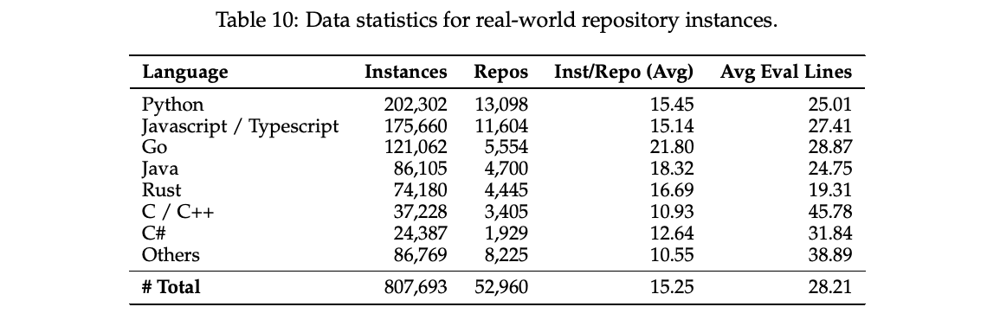
合成 issue。表 11 展示了从开源项目收集的全部代码仓库，以及采用不同缺陷采样策略合成的缺陷的详细数据统计。平均而言，我们成功从每个代码仓库采样了 169.7 个缺陷（或任务）。
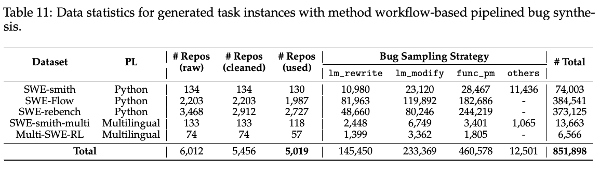
A.2 用于规模扩展的工具对话模板清单
表 12 列出了我们用于规模扩展的全部 21 种工具对话模板。这些模板来自开源模型和 agent 框架，主要在工具定义和工具调用的格式方面存在差异。注意，qwen3_xml_mixed 是 qwen3_coder 的变体，其中工具定义组织为 JSON 行。hermes 是通用的 JSON 格式函数调用模板。harmony_json 和 harmony_xml 由 gpt-oss（OpenAI, 2025）的原始 harmony 格式改编而来。模板 xml_cline 和 xml_aone 分别从 agent 框架 Cline5 和 Aone Copilot6 总结而来。
译注：原文正文写为 21 种，但表 12 实际列出 20 种模板，此处保留原文数值。
A.3 最佳适配打包的详细实现
预训练期间的传统样本打包策略首先将所有文档拼接为一条展平的文本序列，并在文档之间插入特殊分隔 token（例如 <|endoftext|>）。随后，根据模型上下文大小，将整条序列切分为固定长度的块，以构建训练样本。虽然由于无需填充，这种方法效率很高，但它不可避免地引发广为人知的上下文幻觉问题（Ji et al., 2023）。这一问题在涉及工具调用的多轮 agent 交互任务中尤其突出，因为所有工具定义及其调用格式通常只在轨迹开头定义。随机文档切分使模型无法学习和遵循工具调用严格的格式要求。为此，我们在 Megatron 框架（Shoeybi et al., 2019）中使用 C++ 重新实现最佳适配打包算法（Ding et al., 2024a），并将其与另外两种变体进行定量比较。
5 Cline：https://marketplace.visualstudio.com/items?itemName=saoudrizwan.claude-dev
6 Aone Copilot：https://marketplace.visualstudio.com/items?itemName=Aone.aone-copilot
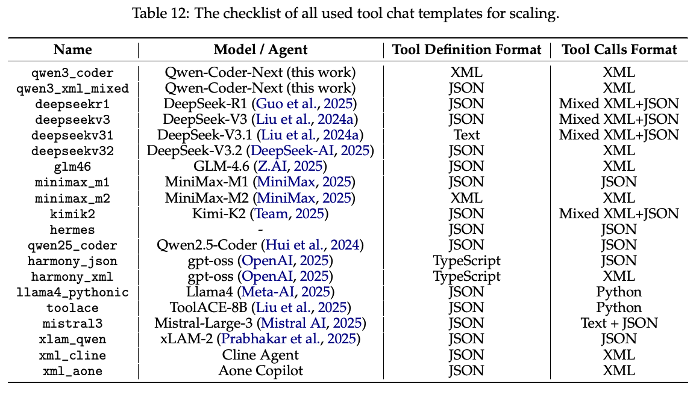
碎片率与填充率。为正式分析样本打包策略的影响，我们定义碎片率和填充率两个指标，分别报告：1）被切碎的文档占训练文档总数的比例；2）填充 token（不参与训练）的数量占训练 token 总数的比例。用数学形式表示为：
A.3.1 样本打包策略的两种变体
为兼容 Megatron 中的数据加载器，我们对原始“先拼接、再切分”打包策略进行最少修改，提出两种简单变体（见图 8）。
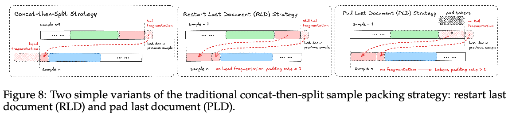
重新开始最后一篇文档（Restart Last Document，RLD）。为解决开头碎片化问题，上一块中最后一篇被切碎的文档被强制在当前样本中重新开始。也就是说，每个训练样本都从某篇文档的开头开始，完全消除开头的碎片化。另一个好处是填充率仍为零，这意味着最优训练效率。然而，尾部碎片化依然存在。并且，这种策略明显引入了 token 权重的重新分配：长文档开头的 token 更可能被重复使用（或重新开始），因此在训练时被隐式赋予更高权重。
填充最后一篇文档（Pad Last Document，PLD）。在 RLD 基础上，为防止上述尾部截断和 token 权重不均衡的重新分配，我们用填充 token 填充上一训练样本中最后一篇被切碎的文档。预训练期间，这些填充 token 的 gradient 被掩码，以防止不合理的反向传播。尽管这一方案完全消除了（接下一页）
（接上一页）碎片化问题，但它因引入相当比例的填充 token 而牺牲了训练效率。为公平比较，我们需要按比例增加训练 token 总量。形式上，更新后的 token 量计算如下：
A.3.2 使用最佳适配打包处理长文档
原始 BFP 算法（Ding et al., 2024a）将样本打包视为经典装箱问题，即对于每篇到来的文档，寻找剩余容量足以完整容纳它的箱子（或样本）。前提条件是所有文档都短于模型输入长度。当最大上下文长度无法单独容纳一篇极长文档时，我们提出以下三种技术处理：
- Split：将极长文档预先切分为大小等于模型输入长度的块。最后一块可能较短，按原样保留。
- Slide：使用带重叠的滑动窗口预先切分极长文档。最后一块与前一块合并，或向前延伸以保持目标模型长度，尝试基于更多上下文进行推断。
- Drop：在运行 BFP 前，直接丢弃这些极长文档。
A.3.3 样本打包策略的消融研究
为在无需容器化环境或 agent 交互的情况下高效评测，我们在 SWE-bench（Jimenez et al., 2024）上使用无 agent 框架进行实验。该无 agent 流程改编自 Xia et al. (2024)，将整个 issue 解决任务分成两步：1）缺陷定位；2）补丁预测。对于缺陷定位，我们准备三种设置进一步简化评测，其中缺陷位置分别来自：1）模型预测；2）真实缺陷代码片段；3）包含缺陷的真实文件。这样，训练后的模型只需根据不同的位置提示预测目标补丁。表 13 对每种设置报告两个指标：1）预测补丁与标准答案补丁之间的相似度；2）空补丁比例。
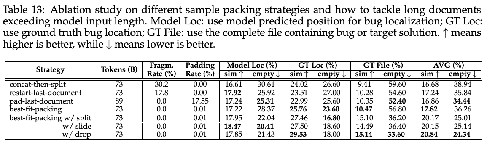
上述结果揭示了三个关键结论：1）消除碎片化能够稳定提高性能。最佳适配打包在补丁相似度和空补丁率方面均优于传统“先拼接、再切分”策略。2）BFP 比填充方法更节省 token，以少 22% 的 token 取得更好的结果（17.82% 对 16.86%）。3）极长文档的处理也不可忽视。在 BFP 中加入 “drop” 策略，取得最佳整体性能（相似度 20.84%，空补丁率 24.34%）。这表明，处理长上下文的最佳方案可能是直接扩展模型上下文长度，而不是复杂的算法改进。主要实验始终采用 “split” 策略处理极长文档。
A.4 网络安全实验
我们将网络安全视为现有模型的前沿方向，即使在网络威胁情报（CTI）分析、漏洞检测和安全编程等非 agent 任务上，模型也尚未达到人类专家水平。为揭示未来能力，我们首次展示 Qwen3-Coder-Next 与其他前沿模型在这一领域的比较评测。
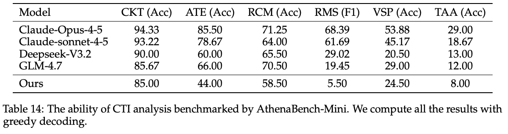
AthenaBench-Mini。AthenaBench（Alam et al., 2025）是 CTIBench（Alam et al., 2024）的更新版基准，用于 CTI 分析评测。该基准包含六种不同的 CTI 推理任务：（1）CTI 知识测试（CTK）；（2）根因映射（RCM）；（3）漏洞严重性预测（VSP）；（4）威胁行为者归因（TAA）；（5）风险缓解策略（RMS）；（6）攻击技术提取（ATE）。我们使用公开的 AthenaBench-Mini 集合，并在表 14 中报告结果。结果表明，Qwen3-Coder-Next 与 Deepseek-V3.2 和 GLM-4.7 等其他开放前沿模型表现相当，但在根因映射和威胁行为者归因相关任务上仍有不足。我们计划通过增加 CTI 分析预训练数据改善这些任务。
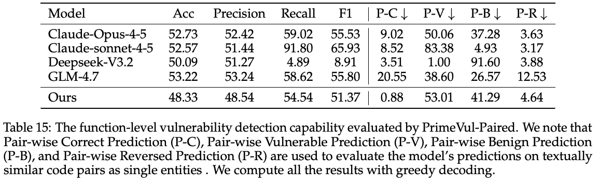
PrimeVul-Paired。为评估模型在漏洞检测上的表现，我们使用 PrimeVul（Ding et al., 2024b）的 Paired 集合。完整集合中有漏洞和无害样本严重不平衡，而 Paired 集合的标签平衡，并由文本相似的代码对组成，其中一个函数有漏洞，另一个无害。这一设计能够更严格地评估模型区分决定漏洞状态的细微差异的能力。如表 15 所示，Qwen3-Coder-Next 取得最低的 P-C 分数，表明它在相似代码上下文中正确识别有漏洞与无害函数方面表现更优。尽管我们的模型具有有竞争力的 F1 分数和整体表现，但相比所有基线，它展现出显著更好的成对预测一致性。
译注：上段忠实保留原文结论。表 15 将 P-C 定义为 Pair-wise Correct Prediction（成对正确预测），但又标注 ↓，正文也将最低 P-C 解释为更优，定义与优劣方向存在内部矛盾；此处未自行修正原文数值或结论。
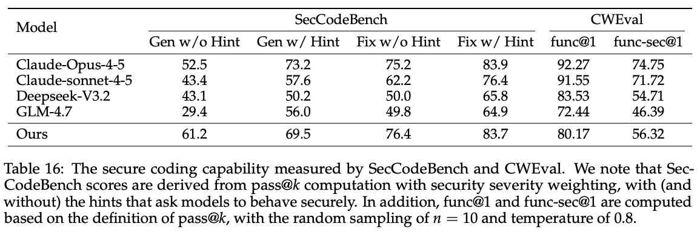
SecCodeBench 与 CWEval。我们认为安全编程在日常实践中很重要，模型能够帮助避免和缓解软件漏洞。通常有两种主要场景：代码生成和（接下一页）
（接上一页）漏洞修复。我们重点关注两个现有基准：SecCodeBench7 和 CWEval（Peng et al., 2025）。SecCodeBench 包含 53 个 Java 编程任务，大多数来自 Alibaba 匿名化的真实历史漏洞，覆盖有安全提示和无安全提示两种条件下的生成与修复场景。CWEval 是多语言安全代码生成基准，同时关注功能性与安全性。从表 16 可以看到，Qwen3-Coder-Next 在 SecCodeBench 的生成与修复任务上均取得有竞争力的安全表现。值得注意的是，即使没有安全提示，它也保持较高分数，尤其是在生成任务上优于 Claude-Opus-4-5（61.2 对 52.5），表明默认代码生成具有稳健的内在安全意识。对于 CWEval，我们分别报告功能性的 func@1 和安全性的 func-sec@1。虽然 Claude 模型的 func@1 分数更高，但 Qwen3-Coder-Next 展现出有竞争力的安全代码生成能力，func-sec@1 为 56.32%，优于 Deepseek-V3.2 和 GLM-4.7，说明它在生成功能正确与安全代码之间具有合理平衡。